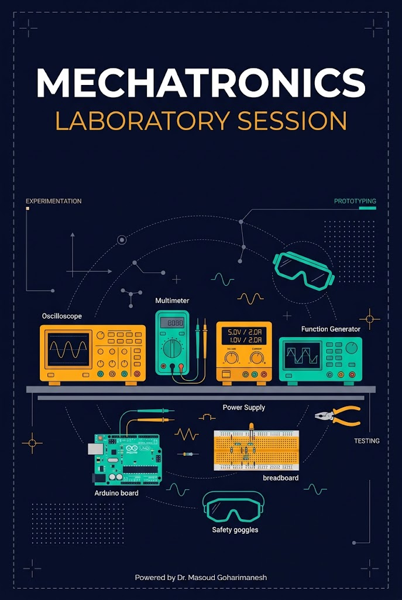
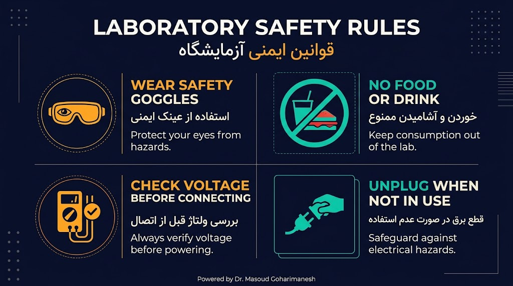
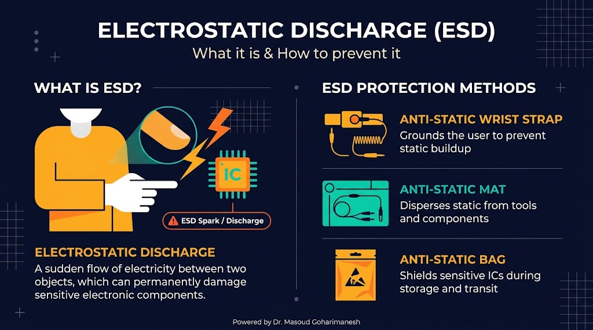
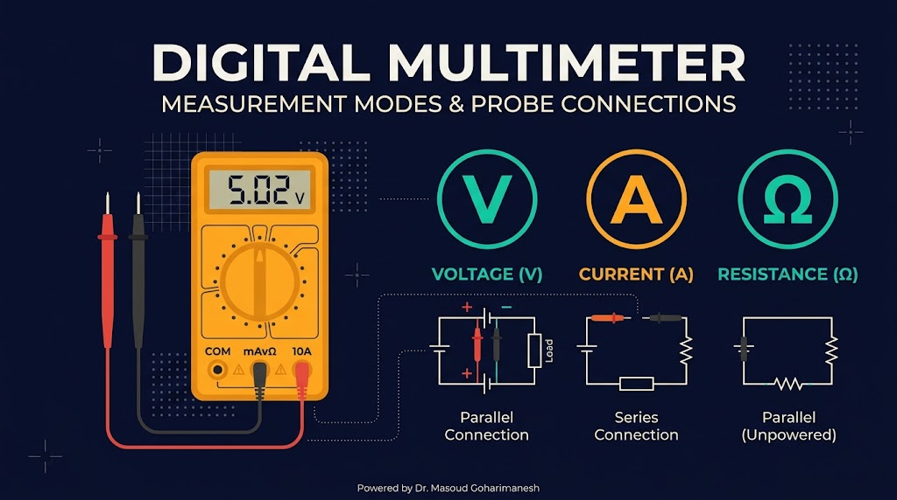
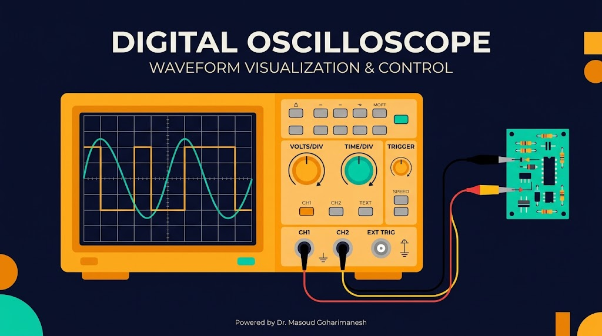
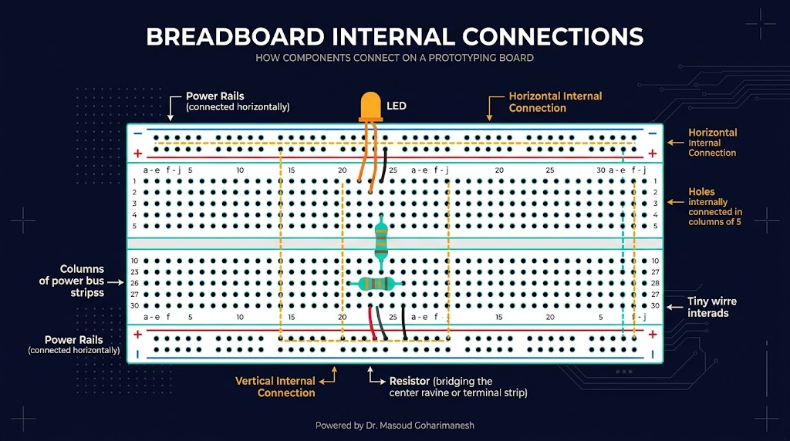
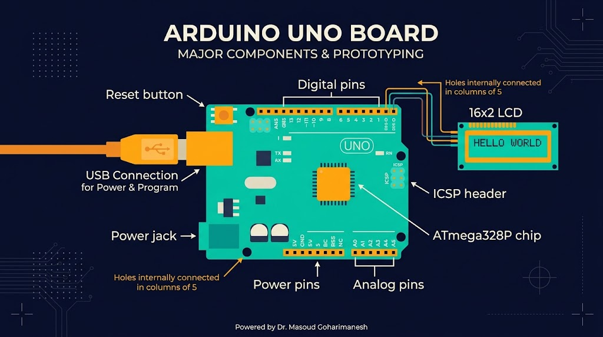

آشنایی با تجهیزات و ابزارهای آزمایشگاهی
شروع بخش عملی — ابزارها، ایمنی، آمادهسازی
دکتر مسعود گوهریمنش
دانشیار گروه مهندسی مکانیک
دانشگاه تربت حیدریه | پاییز ۱۴۰۵
شروع بخش عملی — جلسه ۱۷ از ۲۴!
آیا میدانستید؟
بیش از ۸۰٪ خطاهای آزمایشگاهی به دلیل استفاده نادرست از تجهیزات یا عدم رعایت ایمنی است!
تجهیزات کلیدی آزمایشگاه
- اسیلوسکوپ — دیدن سیگنال
- مولتیمتر — اندازهگیری
- منبع تغذیه — تأمین توان
- سیگنال ژنراتور — تولید سیگنال
- بردبورد — ساخت مدار
سوال کلاسی
برای اندازهگیری سیگنال PWM یک موتور، از کدام دستگاه استفاده میکنید؟ چرا؟
ایمنی در آزمایشگاه
قوانین طلایی — قبل از هر چیز!

قوانین طلایی ایمنی
- عینک ایمنی در تمام مدت آزمایش بزنید
- هرگز با دست خیس به مدار دست نزنید
- قبل از اتصال، ولتاژ و قطبیت را بررسی کنید
- پس از استفاده، دستگاهها را خاموش و از برق جدا کنید
- مصرف غذا و نوشیدنی در آزمایشگاه ممنوع است
- در صورت بروز مشکل، فوراً به استاد اطلاع دهید
ESD — تخلیه الکترواستاتیک
دشمن پنهان قطعات الکترونیکی

ESD چیست؟
تخلیه الکترواستاتیک — وقتی بدن شما بار الکتریکی ذخیره میکند و به یک قطعه حساس (مثل IC) نزدیک میشود، ممکن است یک جرقهی نامرئی ایجاد شود که به قطعه آسیب بزند. این آسیب ممکن است فوری یا تدریجی باشد.
دستبند ESD
اتصال بدن به زمین
پد ESD
سطح کار ضدالکتریسیته
کیسه ESD
نگهداری قطعات حساس
مولتیمتر
پرکاربردترین ابزار اندازهگیری

ولتاژ (V)
موازی با مدار قرار میگیرد. برای اندازهگیری ولتاژ تغذیه یا افت ولتاژ.
جریان (A)
سری با مدار قرار میگیرد. برای اندازهگیری مصرف جریان بار.
مقاومت (Ω)
مدار باید بدون برق باشد. برای تست مقاومت و پیوستگی.
هشدار: اندازهگیری جریان در حالت موازی میتواند به مولتیمتر آسیب بزند!
اسیلوسکوپ
چشم مهندس الکترونیک

اسیلوسکوپ چه میکند؟
سیگنال الکتریکی را در حوزه زمان نمایش میدهد. میتوانید شکل موج، فرکانس، دامنه، نویز و زمانبندی سیگنال را ببینید. برای دیباگ مدارات دیجیتال، PWM، I2C، SPI و... ضروری است.
Time/Div
مقیاس زمانی — هر خانه افقی چه مدت است؟
Volts/Div
مقیاس ولتاژ — هر خانه عمودی چه ولتاژی است؟
تنظیمات پایه اسیلوسکوپ
چگونه سیگنال را ببینیم؟
مراحل تنظیم
- ۱. اتصال پروب: نوک پروب به نقطه مورد نظر، گیره زمین به GND
- ۲. تنظیم Time/Div: از بزرگ به کوچک تا ۲-۳ دوره موج دیده شود
- ۳. تنظیم Volts/Div: تا سیگنال کل صفحه را پر کند
- ۴. Trigger: انتخاب لبه (Rising/Falling) و سطح تریگر
- ۵. Auto/ Normal: در حالت Auto، سیگنال پایدار میشود
مهم: پروب را روی حالت 10X قرار دهید (برای اندازهگیریهای دقیقتر).
منبع تغذیه آزمایشگاهی
تأمین توان دقیق و قابل تنظیم

ویژگیهای کلیدی
- تنظیم ولتاژ (۰ تا ۳۰V)
- محدودیت جریان (0 تا 5A)
- نمایشگر دیجیتال V و A
- حفاظت اتصال کوتاه
نکات مهم
- همیشه ابتدا ولتاژ را صفر کنید
- محدودیت جریان را تنظیم کنید
- قطبیت را بررسی کنید
سیگنال ژنراتور
تولید سیگنال تست
سینوسی
تست پاسخ فرکانسی
مربعی
تست مدارات دیجیتال
مثلثی
تست مبدلها
پارامترهای قابل تنظیم
- فرکانس: از ۰.۱Hz تا ۱۰MHz
- دامنه: ۰ تا ۱۰Vpp
- Offset DC: جابجایی سطح صفر
بردبورد (Breadboard)
ساخت مدار بدون لحیمکاری

نحوه اتصالات داخلی
- ریلهای تغذیه (بالا و پایین): خطوط افقی قرمز (+) و آبی (-)
- ستونهای مرکزی: هر ستون ۵ خانهای (a-e یا f-j) به هم متصل است
- شکاف میانی: دو نیمه بردبورد را جدا میکند (برای IC)
هشدار: قبل از اتصال، مطمئن شوید تغذیه وصل نیست. سیمها را با رنگهای استاندارد (قرمز +، مشکی -) استفاده کنید.
بردهای آموزشی میکروکنترلر
انتخاب برد برای پروژه
Arduino UNO
- ساده و آموزشپسند
- ۱۴ دیجیتال + ۶ آنالوگ
- ۵V، ۱۶MHz
- ایدهآل برای شروع
ESP32
- WiFi + Bluetooth
- دوهسته ۳۲ بیت
- ۳.۳V، ۲۴۰MHz
- مناسب IoT
STM32
- ARM Cortex-M
- ۳۲ بیت قدرتمند
- PWM و ADC پیشرفته
- مناسب کنترل دقیق
آردینو UNO
پرکاربردترین برد آموزشی

پینهای مهم
- Digital 0-13: دیجیتال (0 و 1 برای UART)
- PWM 3,5,6,9,10,11: خروجی PWM
- Analog A0-A5: ورودی آنالوگ ۱۰ بیت
- I2C A4 (SDA), A5 (SCL): ارتباط I2C
- SPI 10(SS),11(MOSI),12(MISO),13(SCK)
ESP32 — قابلیتهای ویژه
میکروکنترلر IoT
ویژگیهای کلیدی
- WiFi داخلی (802.11 b/g/n)
- Bluetooth Classic + BLE
- ADC ۱۲ بیت (دقت بالاتر از UNO)
- DAC داخلی (خروجی آنالوگ واقعی)
- FreeRTOS برای چندوظیفگی
- Deep Sleep برای کاهش مصرف
توجه: ESP32 با ۳.۳V کار میکند — هرگز به پین ۵V آردینو وصل نکنید!
شبیهساز تعاملی
آزمایشگاه مجازی — اسیلوسکوپ و مولتیمتر
شبیهساز اسیلوسکوپ و مولتیمتر
تنظیمات منبع سیگنال
اسیلوسکوپ
مولتیمتر
پارامترهای سیگنال و تنظیمات اسیلوسکوپ را تغییر دهید.
تمرینهای کلاسی
جلسه هفدهم - پیشآزمایشگاه
الف) سوالات مفهومی
ب) تمرینهای عملی
ج) تمرین نوشتاری
د) چالش خلاقانه ★
جمعبندی
نکات کلیدی جلسه هفدهم
- ایمنی: عینک، دستبند ESD، دقت در اتصالات
- مولتیمتر: اندازهگیری ولتاژ (موازی)، جریان (سری)، مقاومت (بدون برق)
- اسیلوسکوپ: نمایش سیگنال، تنظیم Time/Div و Volts/Div
- منبع تغذیه: تنظیم ولتاژ و محدودیت جریان
- سیگنال ژنراتور: تولید سینوسی، مربعی، مثلثی
- بردبورد: ساخت مدار بدون لحیمکاری
- بردهای آموزشی: Arduino، ESP32، STM32
جلسه بعد: آزمایش سنسورها (کالیبراسیون، راهاندازی)
Powered by Dr. Masoud Goharimanesh